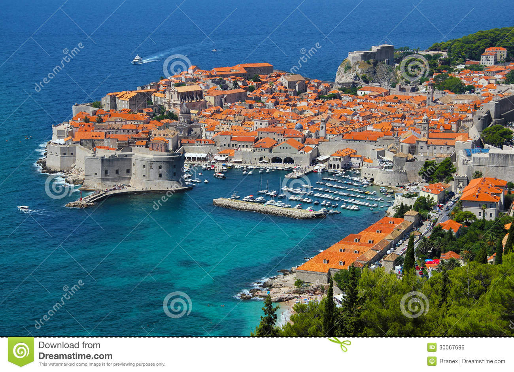
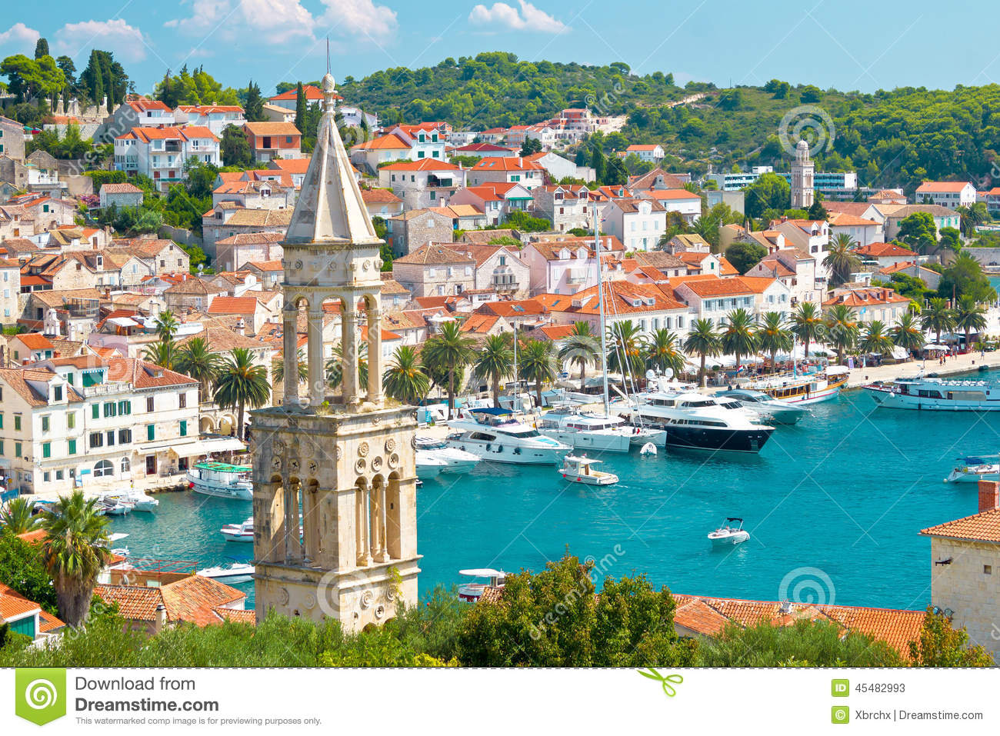
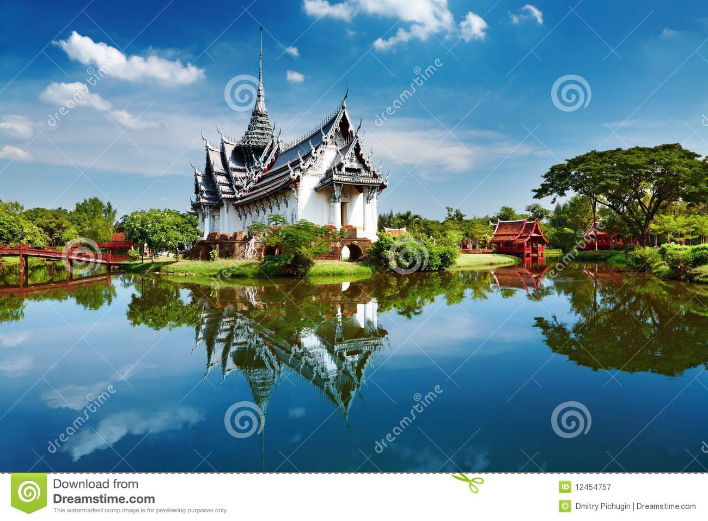
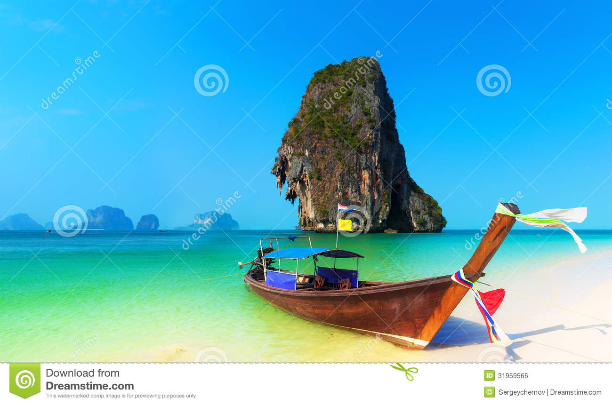
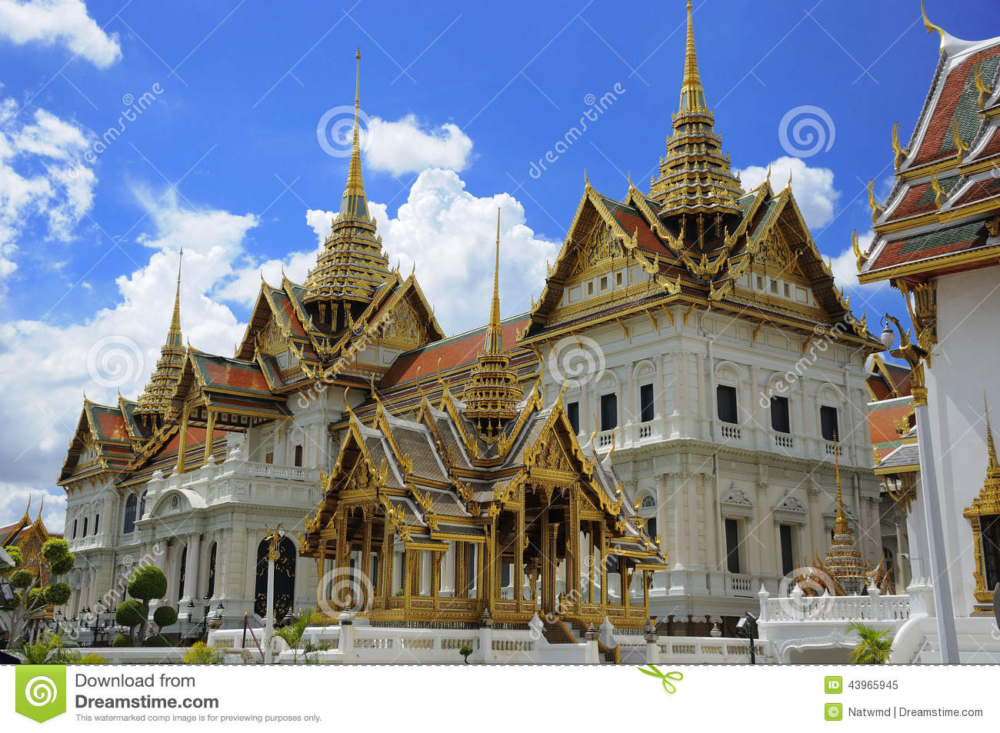

| Places I Have Traveled | Cities | Experiences There | Photos of Favorite Places! |
| Croatia | Dubrovnik | We arrived in Dubrovnik early morning on June 19th. It was sunny and beautiful! We were lucky enough to spend the day lounging on the beach in warm weather. My favorite part was the Game of Thrones walking tour which gave the history behind the architecture! |  |
| Hvar | After three beautiful days in Dubrovnik, we took a boat out to Hvar. The water was more blue than anything I have ever seen! We walked along the Stari Grad, the most historic part of town, and window shopped! |  | |
| Thailand | Chiang Mai | Our first two days were spent in Chiang Mai. We went on an 11 km bike ride to the top of a mountain! From there, we could see an amazing view of the jungle for miles |  |
| Phuket | After Chiang Mai, we made our way down to Phuket on surfed on Kamala Beach! At night, we went back to Patong and spent all night drinking Mai Thais and getting Thai massages. |  | |
| Bangkok | Our last stop was Bangkok, the biggest city in Thailand. We saw the most magnificient temples (called "Wat" in Thai!) during the day, and went on a sunset cruise at night! The happy coincidence was that it was a Thai holiday so fireworks set off across the river! |  |
A link to more history about Croatia: Here
A link to more history about Thailand: Here